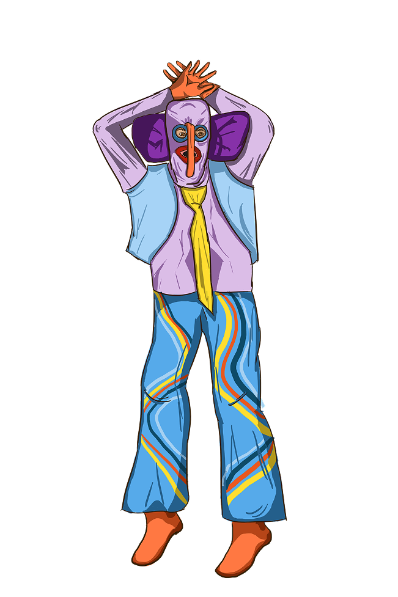
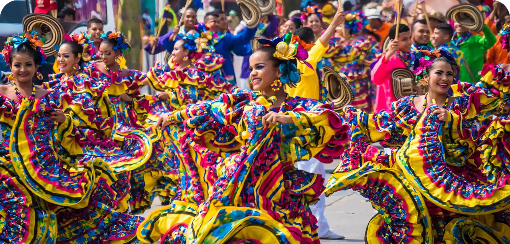
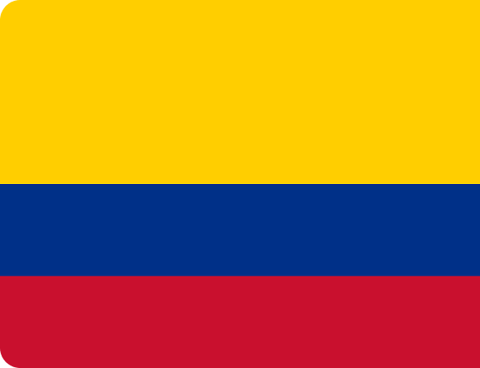
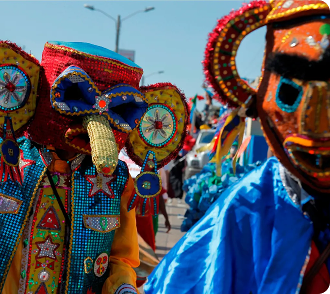

COLÔMBIA
Carnaval de Barranquilla
La Morimonda

A Marimonda é um dos personagens mais emblemáticos do Carnaval de Barranquilla, sendo considerada uma criação genuinamente barranquilheira. Segundo a pesquisadora e promotora cultural Lesly Morales, filha de César “Paragüita” Morales, a Marimonda é o único personagem do carnaval criado diretamente pela população local, diferentemente de outras expressões carnavalescas que possuem origens africanas, indígenas ou europeias.
Morales afirma que personagens como o Congo, a Cumbia e o Garabato derivam de influências externas, enquanto a Marimonda surgiu dentro da própria cultura popular de Barranquilla. A origem da personagem está associada à sátira social e à crítica das elites. O personagem teria surgido como uma forma de zombaria das classes altas, utilizando máscaras exageradas e gestos irreverentes para questionar hierarquias sociais.
O Garabato é uma das danças tradicionais mais representativas do Carnaval de Barranquilla e simboliza o confronto entre a vida e a morte. De acordo com registros históricos sobre a manifestação, sua origem está relacionada às populações afrodescendentes das antigas colônias americanas e foi introduzida em Barranquilla a partir de grupos vindos de Ciénaga (Magdalena) durante a segunda metade do século XIX. A dança pertence à mesma família folclórica do Congo e do Torito, integrando um conjunto de expressões culturais afro-caribenhas presentes no carnaval.
o Garabato representava simbolicamente a condição dos escravizados, que utilizavam a dança para ironizar tanto sua própria realidade quanto figuras de autoridade, a natureza, o trabalho e até a própria morte. A encenação transformava o sofrimento cotidiano em celebração e resistência cultural. A figura da morte aparece como personagem central da narrativa, tentando levar os dançarinos, mas sendo derrotada ao final da apresentação.
El Gabarato


O Carnaval de Barranquilla é uma festa tradicional que mistura influências espanholas, africanas e indígenas, sendo oficialmente celebrado a mais de 100 anos. Um dos momentos mais marcantes é a Batalha das Flores, símbolo do fim da Guerra dos Mil Dias, onde foi marcado pela substituição de armas, por flores, marcando o fim daquela guerra. A festa conta com personagens típicos como as Marimondas, Rei Momo e o Joselito, além de desfiles cheios de dança e música. No segundo dia, destaca-se a “Grande Parada”, com danças como a cumbia, que representa o galanteio de um casal ao som de tambores e flautas.

A Colômbia é um território de grande diversidade étnica e cultural, influenciado por povos indígenas, africanos e europeus. O espanhol é o idioma oficial, mas dezenas de línguas indígenas permanecem vivas em diferentes regiões. Sua história foi marcada por conflitos internos prolongados, movimentos sociais e processos de resistência comunitária.
O Carnaval de Barranquilla sintetiza essa pluralidade. A festa reúne personagens como a Marimonda e o Garabato, figuras que surgiram da sátira popular e da resistência cultural afrodescendente. Entre danças, máscaras e desfiles, o carnaval transforma a memória de conflitos e desigualdades em celebração coletiva, reforçando a identidade caribenha colombiana.
